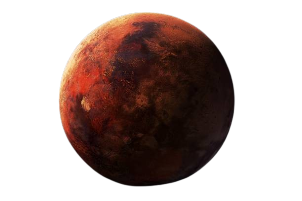

DISCOVER MARS
Step into the world of the Red Planet.
Uncover its rust, craters, polar caps, and the secrets of its ancient rivers.
Step into the world of the Red Planet.
Uncover its rust, craters, polar caps, and the secrets of its ancient rivers.

A comprehensive guide to the Red Planet. Mars has fascinated humans for thousands of years and
represents our best hope for establishing a human presence beyond Earth. With ancient
riverbeds,towering volcanoes, and potential signs of past life,
Mars continues to reveal its secrets.Mars is the fourth planet from the Sun and Earth's outer neighbor. Often called the Red Planet due to iron oxide on its surface, Mars has captivated humanity for millennia and is the primary target for human exploration.
Mars is about half the size of Earth. Despite being smaller, it has some of the most spectacular geological features in the solar system, including the largest volcano and canyon.
Mars has about 38% of Earth's gravity. If you weigh 100 pounds on Earth, you would weigh only 38 pounds on Mars. This lower gravity would make it easier to move around but poses challenges for long-term human health.
Jupiter's atmosphere is a chaotic laboratory of extreme weather, with powerful storms, lightning, and auroras. The planet has no solid surface beneath its thick atmosphere.
Olympus Mons is the tallest volcano and mountain in the solar system. It's so large that if you stood on its summit, its base would extend beyond the horizon. The volcano may still be active.
Mars is a cold desert world with extreme temperature variations. The thin atmosphere means temperatures can change dramatically between day and night. Mars has seasons similar to Earth due to its tilted axis.
Mars's surface is a rust-colored desert covered with rocks, dust, and dramatic geological features. Evidence suggests Mars once had liquid water on its surface billions of years ago.
A day on Mars (called a "sol") is remarkably similar to Earth's day. Mars also has a similar axial tilt to Earth, giving it four distinct seasons, though they last nearly twice as long.
Mars has two small, irregularly shaped moons named after the sons of the Roman god Mars: Phobos (fear) and Deimos (panic). They're likely captured asteroids and are much smaller than Earth's Moon
Mars once had abundant liquid water on its surface. Today, water exists as ice at the poles and underground. Scientists have found evidence of seasonal water flows, raising hopes for potential life.